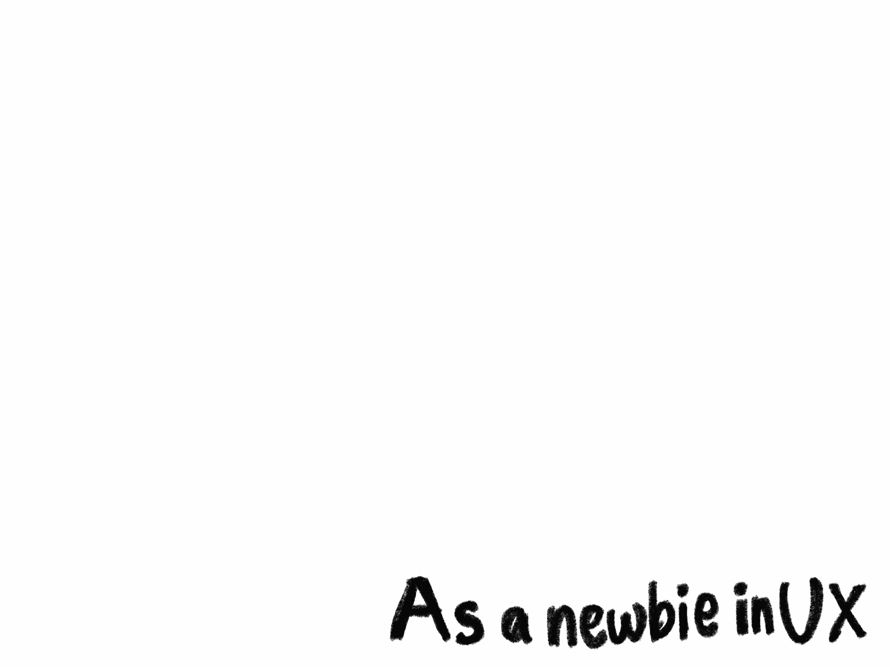
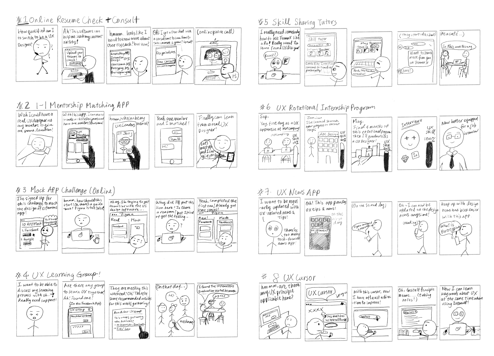
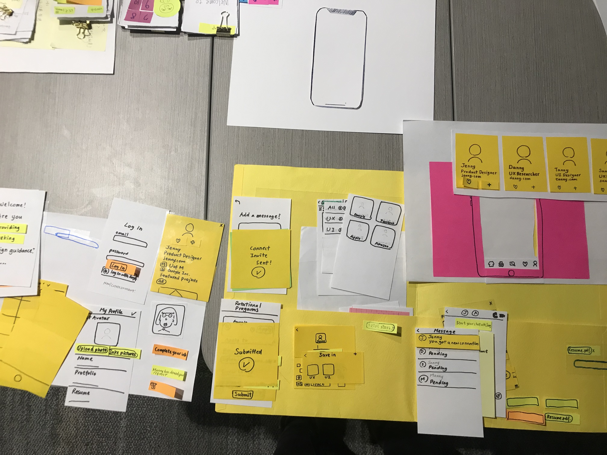
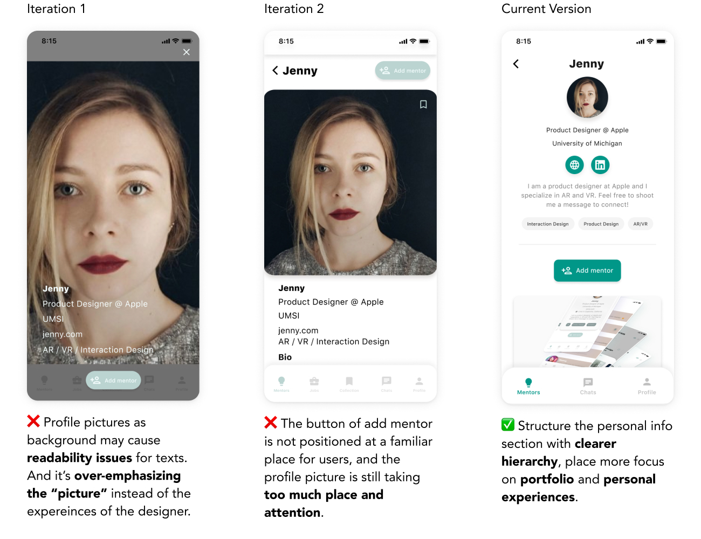
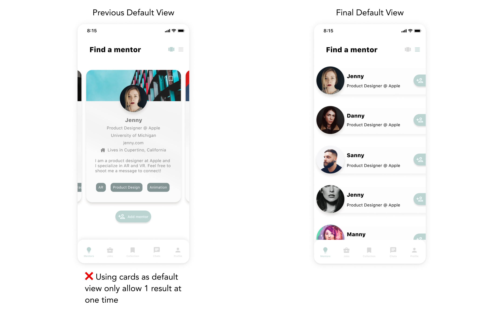
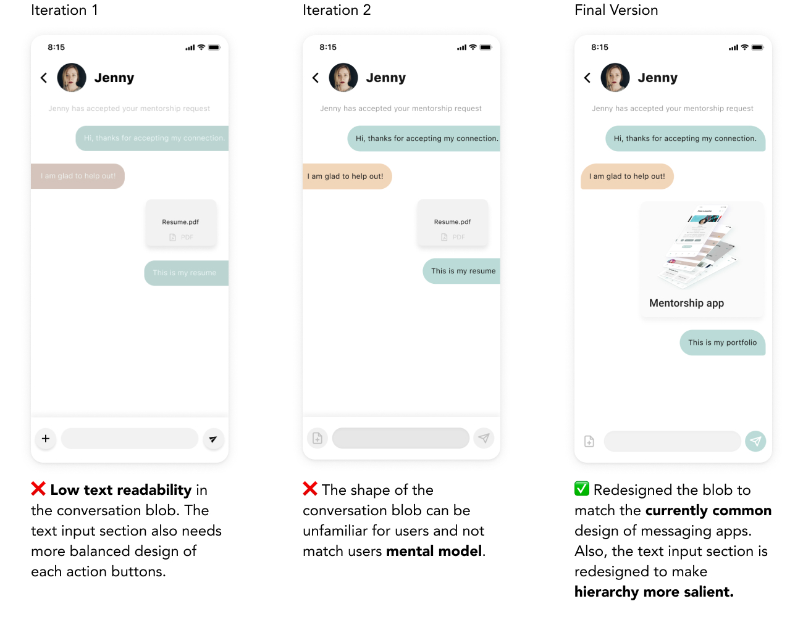

Design Mentorship app
A product concept to build a design community.

Overview
Time
Sep. - Dec. 2019
Role
Solo Product Designer
Type
Class project
Update
3 days, Jan. 2021
Methods & Tools
Methods
User Interview, Observation, Paper Prototyping, QOC Analysis, Hi-fi Mockup, Interactive Prototyping, Remote Usability Testing
Tools
Pen & paper, Procreate, Figma, Principle
Problem
Aspiring UX designers/learners face difficulties finding personal guidance and practical experiences through their transitioning phase.
Learning UX design from other background or shifting careers into UX without any design education can be stressful. And that’s what I wanted to cope with. I want to create an environment where new learner can feel supported to reach out for guidance from professional UX designers.
Solution
An app that connects professional designers and new aspiring designers.
The solution I am proposing is to provide a friendly platform to connect professional UX designers to UX learners so that UX learners can feel comfortable and not disadvantaged to reach out to designers in the industry for guidance or work review. It is an app that can provide people with social functions such as adding mentor, chat, and provide internship or apprentice programs that are available to UX learners regardless of their identity as students or not.
How It Works
1. Find a mentor
find designers that inspire you
2. Send a request
to connect to your mentor
3. In-app coffee chat
get professional feedback on portfolio and anything
Digital Mockup
Finding mentors
Adding notes
Connecting
Internship browsing
Browsing others' portfolio
Check profile
Design Process

Research
1. Observation & Empathy map
Participants are stressed about learning design as inexperienced designer-to-be.

The original problem I am trying to deal with is the stress that graduate students face. Thus, originally I wanted to know how to help them face the pressure, and the target user would be my UMSI classmates since they not only represent graduate groups, but they are accessible. Then, after initial observance and interview (through random chats), I found that the stress origin of the current students is from job searching and design skill-building because they mostly come from different academic backgrounds other than UX design. Also, resonating to my own career-switching journey, I recalled it was challenging for me to self-learn UX design. Thus, I then decided to adjust my problem framing to the career switching for becoming designers.
I created this empathy map based on the initial chat with some of my intended users. I wanted to understand their emotion as sprouting design learner and graduate students in the beginning. However, I found out their attitude about stress — they are more concerned with how to process it actively, instead of searching for other means to alleviate the stress.
2. Competitive analysis
Design opportunity: a friendly platform for newbie designers.

In the competitive analysis, I was researching where design learners can possibly ask for learning tips. So, from my personal experiences and observance, I found there are four platforms where designers or aspiring designers can gather and ask for feedback: Designer News, design groups on Facebook, Dribbble, and Linkedin.
However, none of these platforms can provide a direct, supportive and personal environment for aspiring UX designers. Imagine you reach out to professional designers on Linkedin -- it can be very intimidating and scary for new UX learners when people display the most professional and robust side of themselves on Linkedin. Also, in terms of asking advice on Facebook groups or Dribbble, both of them are still open spaces, which can make it hard to find personalized feedback.

3. Sketches
User love #2 and #6 idea most.
The sketching technique I used is similar to the crazy eight but with a longer timeframe. I produced eight design concepts with sketches to quickly ask for feedback later. With the sketch, I am benefited from obtaining feedback from potential users and peers before I delve into design details. Most important of all, I was able to converse my mind to the world with a simple sketch, which is an idea learned from Buxton's The Anatomy of Sketching in Sketching User Experience (Buxton, 2010).
4. Storyboardings
I later developed eight storyboards based on my sketching. With storyboarding, I was able to develop a context where users can use my product or service. This technique helped me better empathize myself with users, and also developed tentative user flow for the product.
5. User interviews
There are too many resources without credibility.
I need personal mentors for advice on UX design and career choices.

I conducted 5 face-to-face user interviews and an online survey. However, I decided to focus more on the data from the interviews because I obtained whole stories from my users through the interviews. The users I interviewed all have different backgrounds other than design.
The main takeaway in this stage is that I realized for my intended users: they wished to accumulate more practical experiences and connections when they navigate through their design career. These finding helped me narrow down to the two top-rated design concepts -- a mentorship platform and apprentice matching mechanism.
6. User persona
I created four user personas, with 3 of which based on user research and a provisional one (anti-persona) based on my assumption.
With user persona, I can better empathize myself with their motivation and goal, so that the product can be better tailored for them.

Design
1. Design justification: QOC Analysis
During the research process, I have already had some rough design ideas in mind. However, before I jumped to paper prototyping, I used the QOC Analysis to justify some of my design rationale. This is a method called Questions, Options and Criteria that can be used to provide design rationale for design decisions.


2. User Testing + Paper Prototype
From the in-person interaction with intended-users, I found usability issues and understand more of users' mental model .
My goal at the stage is to test the tentative product flow. Why did I use paper prototyping in the stage? With the hand-made papers and sketches, users will be willing to provide feedback more than a high-fidelity mockup — the paper and low-fidelity signify that it is still a work in progress and hence serve the purpose to invite honest feedback.
3. High-fidelity design
I use Figma for user interface design and also used Principle for microinteraction because Principle is powerful to create subtle interactions that I needed such as swiping effect.
When I was creating the high-fidelity prototype, I focused more on the interaction instead, which is a part that I enjoy most during the whole design process. I spent lots of time contemplating the details of interaction in order to have a smooth connection among different product screens. At the same time, I paid extra care on style and color because this is a product for designers, so I expect it to present a certain level of aesthetics. For the design system, I decided to create my visual language but look for Google's Material Design Guideline as a reference because I wanted to set apart from common visual patterns while still maintaining a certain level of familiarity.

Iterations
1. Profile View
The first iteration focuses on imitating the social media feature of swiping, which is a gesture associated more with making friends and 1-1 connection.
The second iteration is based on users' feedback. In the second iteration, the design of the card pays more attention to the display of the background and interests of designers.

2. Full-page Information of Mentors
First iteration: it's too focused on displaying all information, which, at the same time, render only one designer at a time.
Second iteration: it renders a list of designers at a glance so that users can search for their ideal mentors more quickly.
3. Default View
The first iteration: focuses on the full-screen experience. However, this iteration also implies one risk: text legibility on different photos.
Second iteration: the photo size is reduced, which allows more space for information display without risking the text readability.
4. Chats
5. Share Portfolio & Documents

Usability Testing
Testing findings
tasks completion and every task was finished under 1 minute.
should be a secondary feature. The app should still focus on the platform for mentorship.
for sending portfolio is a bit confusing. It doesn't match the mental model for an action sheet.
I did a remote usability testing with 1 user who is also interested in learning design. I planned 6 tasks for him and asked him to provide feedback on the experience and product flow after each task.

Social Impact
I want to provide a platform where everyone with a dream for a future job can be encouraged and supported by professional peers directly, and UX design is just the first field I have the most access to work on.
I believe my design will have a positive impact on future UX learners who are shifting their careers from other backgrounds. With this app, they can build a professional network with a friendly and supportive community where they don't need to worry about asking for help, nor should they feel embarrassed when they are asking for feedback. I want to provide a platform where everyone with a dream for a future job can be encouraged and supported by professional peers directly, and UX design is just the first field I have the most access to work on. At the same time, I also wish there would be more apprentice or internship opportunities in the industry for non-students or perhaps people taking online courses, which is an ideal scenario that needs mutual effort.
Future Task
How to avoid discrimination
When I was asking feedback from my peers, one of the feedback I got from my peers is the importance to avoid discrimination through the profile picture, so I was seriously considering replacing profile picture with avatars.
However, there was no sufficient research to support this theory and I faced the difficulty to implement it in the high-fidelity design. One of the problems is due to my lack of ability to visualize the idea in the prototype. Also, the other one is that I started to doubt whether it helps to swap a human-face picture with an avatar, which can be further validated through A/B testing later on, from my point of view. As a result, I decided to adopt a human-face profile picture first and then have the avatar version as A/B testing.
Takeaway
Reflective thinking in design
During this design process, I grew in a supportive environment of encouraging reflection as a designer, which is a spirit seriously emphasized by our Professor Tawanna. So, at each stage in the design process, I am trained to reflect critically on my own work and adjust my design to match users' needs.
What is reflective design? I learned this concept in the Interaction Design class and totally think it represents my design philosophy because I think reflection on self-work is a crucial aspect of a UX designer. In the research paper Reflective design, Senders et al. mentioned, "We define 'reflection' as referring to critical reflection, or bringing unconscious aspects of experience to conscious awareness, thereby making them available for conscious choice." (Sengers et al., 2005)


{kind=link}
{kind=link}
{kind=link}
{kind=link}
{kind=link}
{kind=link}